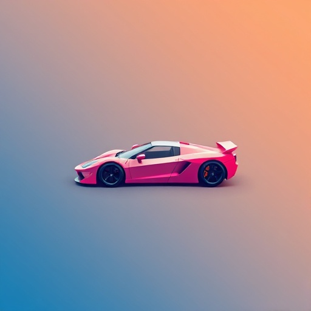

Brainstorm without clutter.
Notes, decks, diagrams, mockups — the project work that doesn't belong in git. Oyster keeps it tied to your project but separate from your code. Visible, searchable, launchable.
Sprint Board
Series A Pitch
Error Analysis
Chess Study
Design Brief

Race HUD